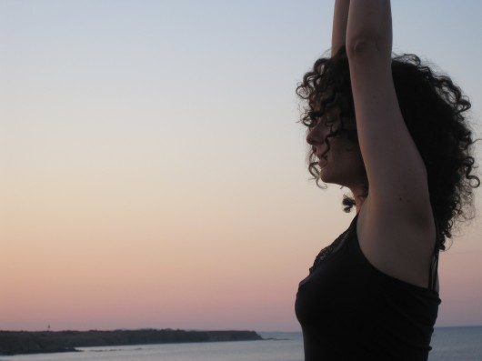

Ganzheitliches Körpertraining

Videolink- Ganzheitliches Körpertraining mit maRia Probst: Das "Ganzheitliche Körpertraining" basiert auf Übungen aus dem Qi Gong, Yoga, verschiedenen Somatic Movement Practices und Elementen des zeitgenössischen Tanzes. Mein zentrales Anliegen darin ist, Kraft, Beweglichkeit und Koordination mithilfe eines körpergerechten Bewegungsverständnisses zu erlangen und dabei die Wahrnehmung und Führung von Energieflüssen im Körper auch anzusprechen. Der rote Faden des Training ist die Lehre zur Gesunderhaltung der Traditionellen Chinesischen Medizin. In den Trainingseinheiten sollen ein wohlwollender Zugang zu sich selbst und zur sanften Erweiterung der eigenen Grenzen im Mittelpunkt stehen. Ich
HERBSTTRAINING 2021 mit maRia Probst Sammeln, bewahren, loslassen, wie die Aufmerksamkeit auf die Atembewegung uns dabei unterstützen kann und wie der Lunge*Dickdarm**-Funktionskreislauf in der Wandlungsphase Metall*** unser Training bereichert und unser Immunsystem stärkt Termine: 6.10-27.11.2021 (7 Termine, am Mi 27.10 kein Training) jeweils Mittwoch 9.30-11h Ort: Friedmanngasse 36, 1160 Wien (Im Hof, hinten re durch die Garage die Holztreppe hoch ;-), am besten sich beim ersten Termin etwas mehr Zeit einplanen:) *Die Lunge kontrolliert das „qi“ (die Atmung, aber auch die aktive Energie des ganzen Körpers) und lenkt das Ein- und Ausatmen. Sie kontrolliert die Ausbreitung der Abwehrenergie (gegen äußere Krankheitsfaktoren) und festigt die Körperoberfläche. Sie kontrolliert Reinigung und Sinken und öffnet die Wasserwege (lenkt die Schlacken zur Harnblase). Sie öffnet sich zur Nase. Die Lunge entspricht der Wandlungsphase Metall. **Der Dickdarm kann als Durchgang Unreines passieren lassen und ausscheiden. Das Thema „Loslassen" ist eng mit dem Dickdarm verbunden. ***Die Fünf-Elemente-Lehre untersucht die Gesetzmäßigkeiten, nach denen dynamische Prozesse (Wandlungen) im Bereich des Lebendigen ablaufen, betont also Werden, Wandlung und Vergehen. Die fünf Elemente Holz, Feuer, Metall, Wasser und Erde sind unmittelbar aus der Natur abgeleitet. Aus ihren abstrahierten Eigenschaften wird auf die Beziehungen zwischen Erde, Mensch und Himmel und innerhalb dieser Sphären geschlossen.
Die Kursgebühr bitte auf das KONTO: Probst Maria, AT74 60000 00072192427 mit Verwendungszweck GKT_Herbsttraining21 überweisen. Wer eine Ermäßigung in Anspruch nehmen will, bitte mit mir rücksprechen. Danke** Bitte um verbindliche Anmeldung per mail unter tanz@shenmotion.at bis Mi 29.9.21 Für Alle, die meine Arbeit nicht kennen ist ein unverbindliches Schnuppern um €10.- (bitte auch dafür um verbindliche Anmeldung!) am besten zum ersten Termin möglich** Fragen und Rückmeldungen gerne unter tanz@shenmotion.at oder 0650 9510814 WINTERTRAINING 21/22 mit maRia Probst
Die stille Ressource- Aufrichtung mithilfe des Organsystems und wie wir den Nieren-Funktionskreislauf* stärken und dadurch unser "Jing"* unsere Lebensessenz bewahren können
Termine: 1.12.21-2.2.2022 (7 Termine: 1.12/.15.12./22.12.21/12.1/19.1/26.1./ 2.2.2022) jeweils Mittwoch 9.30-11h
Ort: Friedmanngasse 36, 1160 Wien (Im Hof, hinten re durch die Garage die Holztreppe hoch ;-), am besten das erste mal etwas mehr Zeit einplanen) *Die Niere speichert das „jing“ (Essenz, Samen). Sie kontrolliert das Wasser. Sie kontrolliert die Aufnahme des qi das durch die Lunge aufgenommen wird und das das verbrauchte qi ersetzt. Sie ist verantwortlich für die Knochen. Sie erzeugt Mark. Sie öffnet sich zum Ohr. Die Niere entspricht der Wandlungsphase Wasser.
Kosten: gesamter Kurs €130.- / erm. €110.- / 5er Block €100.- Die Kursgebühr bitte auf das KONTO: Probst Maria, AT74 60000 00072192427 mit Verwendungszweck GKT_Wintertraining21/22 überweisen. Wer eine Ermäßigung in Anspruch nehmen will, bitte mit mir rücksprechen. Danke.
Bitte um verbindliche Anmeldung per mail unter tanz@shenmotion.at bis Mi 24.11.21
Für Alle, die meine Arbeit nicht kennen ist ein unverbindliches Schnuppern um €10.- am besten zum ersten Terminen möglich** (bitte per mail voranmelden!)
Fragen und Rückmeldungen gerne unter tanz@shenmotion.at oder 0650 9510814
Bei Buchung beider Kurse (Anmeldung per mail, Zahlungseingang) bis Mi 29.09.2021 Ermäßigung von €25.- (€235 /erm. €195) (Verwendungszweck GKT_HerbstWinter21/22)
DAS TRAINING FINDET IM RAHMEN DER JEWEILS GESETZLICH GELTENDEN COVID 19 PRÄVENTIONSMASSNAHMEN STATT.
Stornobedingungen
Stornierungen werden grundsätzlich und ausschließlich nur schriftlich entgegen genommen. Solltest Du an der Teilnahme an einer bereits gebuchten Veranstaltung verhindert sein, so teile mir das bitte umgehend und schriftlich mit. Du hast jederzeit das Recht, eine ErsatzteilnehmerIn zu nennen. Solltest Du an der Teilnahme verhindert sein und keine ErsatzteilnehmerIn nennen, so kannst Du die Teilnahme an dieser Veranstaltung, bis sieben Tage vor Kursbeginn kostenlos stornieren. Ab dem sechsten Tag bis zu einem Tag vor Kursbeginn werden 50% einbehalten, bei Stornierungen am Kurstag selbst, wird der gesamte Kursbeitrag fällig. Widerrufsrecht für private Kunden Erfolgt die Buchung einer Veranstaltung im Fernabsatz, insbesondere also telefonisch, per Fax, per E-Mail oder online, steht dem/der Teilnehmenden im Sinne des FAGG ein gesetzliches Rücktrittsrecht binnen 14 Tagen ab Vertragsabschluss zu. Um Dein Widerrufsrecht auszuüben, musst Du mich, Maria Probst, Floridusgasse 30/2/3, 1210 Wien t:+43-650 9510814 e: tanz@shenmotion.at mittels einer eindeutigen Erklärung (einem mit der Post versandten Brief oder per E-Mail) über Deinen Entschluss, diesen Vertrag zu widerrufen, informieren. ARCHIV SOMMERTRAINING 21 mit maRia Probst Weite im Brustkorb, integrierte Arme und mit dem Boden verbunden- der Sommer im Zeichen des Herz Funktionskreislaufes Termine: 26.5 - 23.06.21 (5 Termine) jeweils Mi 9.30-11h
In der chinesischen Medizin steht der Sommer im Zeichen des Herz/Dünndarm Funktionskreislaufes und der Freude. Demzufolge werden wir uns der Arm Integration, dem Öffnen des Brustkorbs und der Verbindung durch unser Skelett- und Organsystem mit dem Boden widmen. Dem Herzen werden wir dabei besonders Raum geben.
FRÜHJAHRSTRAINING 21 mit maRia Probst
Elastizität, Kraft und Verbundenheit- Training mit Fokus auf dem Fasziensystem
Termine: 24.2-19.5.21
jeweils Mi 9.30-11h
Ort: je nach aktuellem SarsCovid19 Präventions-Maßnahmenstand entweder auf Zoom, outdoors oder im Studio Friedmanngasse 36, 1160 Wien (Im Hof, hinten re durch die Garage die Holztreppe hoch, am besten das erste mal etwas mehr Zeit einplanen ;-))
|